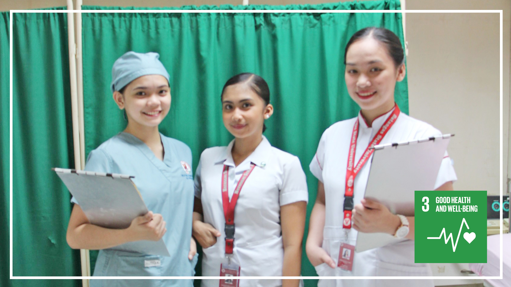
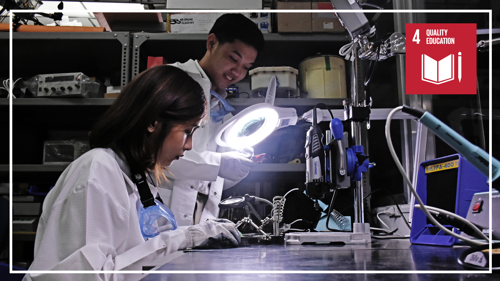
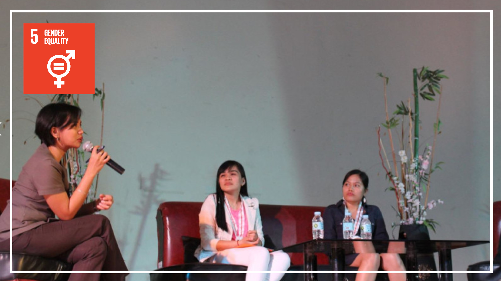
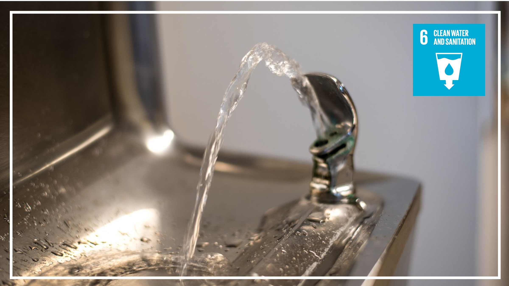
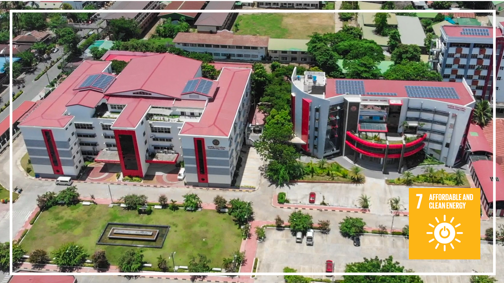
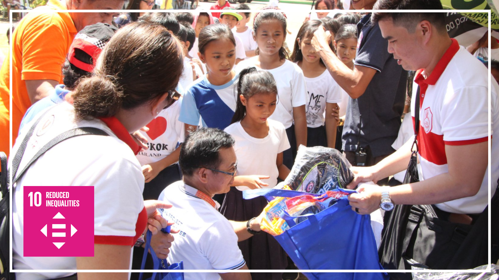
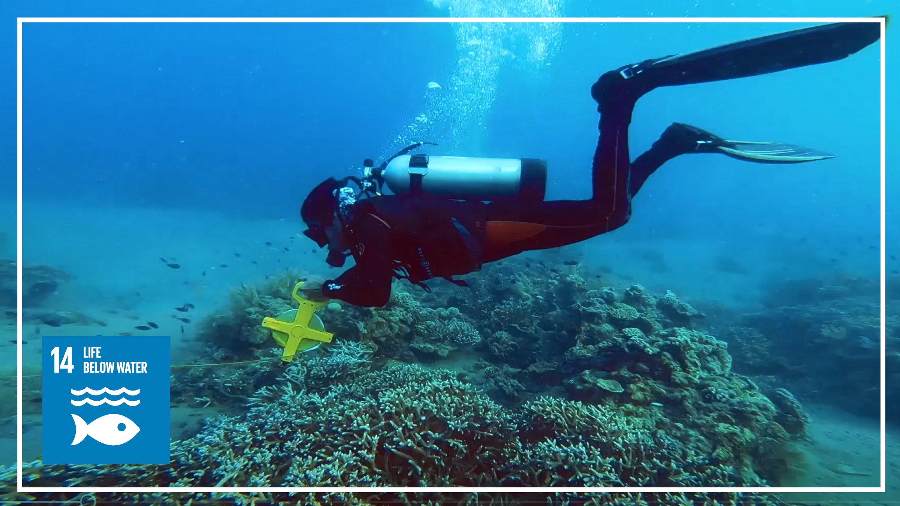
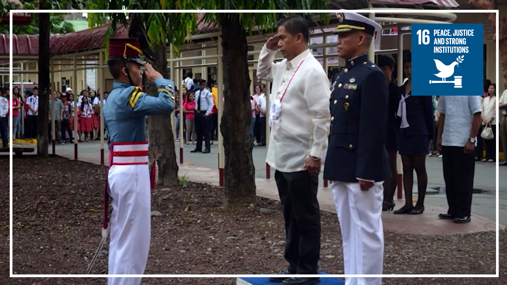
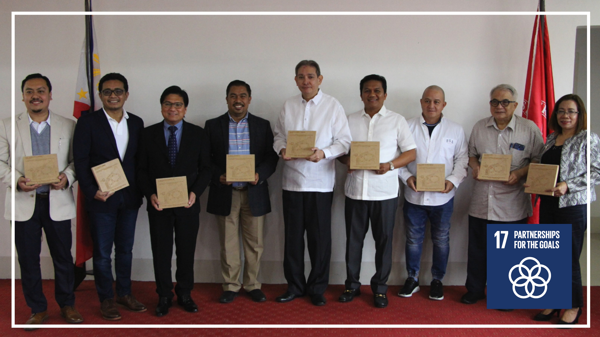

About Us
Who are we
Batangas State University - The National Engineering University, a pioneering institution dedicated to promoting Sustainable Development. Our aim is to provide our students with the information, skills, and experience they need to become the next generation of leaders capable of addressing the world's most serious environmental and social concerns.
Our university has a long-standing reputation for academic excellence, research, and innovation. We believe that our responsibility extends beyond academic rigor to environmental and social stewardship. We aim to be a leader in sustainable development, and our website is an extension of this commitment.
Our mission is to promote sustainability through education, research, and community engagement. We believe that sustainability is essential to creating a better world, and we are dedicated to preparing the next generation of leaders to meet the challenges of the future.
Our website serves as a platform for sharing knowledge and promoting best practices in sustainable development. Here, you will find a wealth of information on sustainability initiatives and programs at our university, as well as news and events related to sustainability.
Sustainable Development Goals
17 SDG Goals
Goal 1: End poverty in all its froms everywhere
Low birth rates can keep nations in poverty. High family sizes and poverty frequently coexist. Individuals who live in underprivileged areas typically lack the choice to decide how many children they want to have, and in some cases feel pressured to have a large family in order to be supported in old life. Those who are impoverished and have a large family are unable to provide enough for each child, which frequently prevents children from attending school and causes girls to be married off as child brides. When they have a large number of children at home to care for, women are also less able to achieve financial independence. To end poverty, it is essential to make sure that everyone has the freedom to choose small families.

Goal 2: End hunger, achieve food security and improved nutrition and promote sustainable agriculture
Under prolonged population expansion, it will become harder and eventually impossible to feed the world without further harming the environment. Agriculture is already a major contributor to environmental deterioration, and more land conversion for farming would have catastrophic effects on biodiversity and our climate. The second part of the century is expected to see a population increase to above 10 billion. Past successes are swiftly undone when population growth outpaces development advancements; over the previous three years, there has been an increase in the number of people who are hungry. Scientists have cautioned that unless action is made to lower reproduction rates, vulnerable regions like the Sahel face catastrophe.

Goal 3: Ensure healthy lives and promote well-being for all at all ages
Healthcare systems that are underfunded may collapse under the weight of expanding populations. High rates of unintended pregnancies and avoidable maternal fatalities are caused by a lack of access to high-quality reproductive healthcare, which includes contemporary contraception and medically safe abortion. Almost 800 women die every day from pregnancy-related complications worldwide, where roughly half of all pregnancies are still unwanted. The total number of women who still need contraception is rising as a result of population expansion. Particularly in locations where health facilities are already stretched thin, extremely high population densities encourage the spread of disease and are detrimental to public health. Investments in universal access to high-quality health care, including family planning services, help to control population growth and enhance quality of life.
Goal 4: Ensure inclusive and equitable quality education and promote lifelong learning opportunities for all
The answer to reducing poverty and halting population growth is increased investment in high-quality education. Girls suffer disproportionately from lack of access to education as a result of gender inequality. In general, a woman's family size decreases with the length of her education. Delaying childbearing and having fewer kids gives women the freedom to pursue educational possibilities, such higher degrees, which would be challenging or impossible if they had many dependents.
Goal 5: Achieve gender equality and empower all women and girls
The key to resolving our most pressing social and environmental challenges is empowering women and girls to take charge of their bodies and lives. One of the key causes of high fertility rates is gender disparity. No nation has yet attained complete equality, and the worst crimes and injustices based on gender are still frequent and pervasive. The UN asserts that it is economical and feasible to put an end to gender-based violence, harmful customs (such as child marriage and FGM), avoidable maternal mortality, and unmet family planning needs, but that there is still a major financing gap. In the meantime, population growth and poor progress are leading to an increase in the number of women and girls who are subjected to hazardous behaviors.
Goal 6: Ensure availability and sustainable management of water and sanitation for all
A global water crisis is being exacerbated by population increase and climate change. Aquifers become overdrawn as a result of our expanding population, pollution rises, and the ability to safely dispose of wastewater is increasingly threatened. More than half of the world's population, or 5 billion people, is predicted to reside in water-stressed areas by the year 2050.
Goal 7: Ensure access to affordable, reliable, sustainable and modern energy for all
Due to population increase and the delayed adoption of renewable energy, the number of people consuming dirty fuels continues to rise. The next 30 years will see a 50% rise in the world's energy demand as a result of population growth and economic expansion. High-income nations must set the example for the transition to clean fuels and aid low-income nations in following suit. Stopping population growth will increase the likelihood that the world can transition to cheap, clean energy.
Goal 8: Promote sustained, inclusive and sustainable economic growth, full and productive employment and decent work for all
A large number of dependent young people makes economic growth nearly impossible and also breeds social instability. The goal of economic expansion is directly at odds with other SDGs in high-income countries, particularly in terms of the impact on the environment. Unlimited economic and population expansion can never be sustainable on a finite world. We must work toward a healthy environment and everyone's wellbeing as a global community, not just infinite growth.

Goal 9: Build resilient infrastructure, promote inclusive and sustainable industrialization and foster innovation
The more people there are, the more difficult it is to give everyone access to contemporary infrastructure and technologies, and the more natural resources we will obliterate in the process. Construction is a significant producer of greenhouse gases, and the conversion of land to human infrastructure is a major factor in biodiversity loss.

Goal 10: Reduce inequality within and among countries
Between the developed world and the developing world, as well as within individual nations, there are enormous differences. It is crucial to have a more equitable distribution of resources throughout the world. While we must reduce the number of new customers everywhere, the wealthiest among us find that choosing a small family has a greater influence.
Goal 11: Make cities and human settlements inclusive, safe, resilient and sustainable
Nowadays, metropolitan regions are home to more than half of the world's population. This percentage is predicted to increase to 68% by 2050. The pace at which infrastructure like clean water, sanitation, health, jobs, and education can be provided may not be able to keep up with the rapid development of urban populations. Land used for human settlement is one of the major contributors to habitat degradation, with metropolitan areas tripling since 1992, according to WWF. For both physical and mental health, having access to green spaces is crucial, but natural and semi-natural areas are increasingly being lost due to housing needs.

Goal 12: Ensure sustainable consumption and production patterns
According to the UN, high-income nations have a material footprint per capita that is 60% larger than upper-middle-income nations and more than 13 times higher than low-income nations. Measures to stop our population increase must be taken in conjunction with responsible food consumption and production. The key factor contributing to the expected 71% increase in resource use per person in 2050 above today's levels is the very high number of individuals fleeing poverty. By 2050, we will need three Earths to meet our demands because we are now using resources 1.75 times faster than they can be replenished.

Goal 13: Take urgent action to combat climate change and its impacts
The climate catastrophe is mostly caused by unsustainable consumption patterns in high-income countries, but every more human on the earth increases emissions. One of the most effective strategies to reduce atmospheric CO2 by 2050 was determined to be decreasing population increase by educating girls and offering family planning, according to a thorough analysis of the climate solutions now on the market by Project Drawdown.

Goal 14: Take urgent action to combat climate change and its impacts
Population increase exacerbates pollution (plastic and runoff), overfishing, coral bleaching, and the loss of coastal ecosystems. Human activity has destroyed two thirds of marine areas, and sharks, rays, and reef corals are all in danger of going extinct. In order to address the loss of life under the sea, population expansion and excessive consumption must be curbed. Together, family planning, women's education, and empowerment might encourage more women to get involved in managing marine resources, improve food security, and lessen the effects of climate change.
Goal 15: Protect, restore and promote sustainable use of terrestrial ecosystems, sustainably manage forests, combat desertification, and halt and reverse land degradation and halt biodiversity loss
One of the key reasons for biodiversity loss is the increase in human population. Since 1970, 60% of all vertebrate wildlife populations have disappeared, according to WWF. Our population has more than doubled in that time. A groundbreaking UN assessment from 2019 specifically stated that human population expansion is an indirect driver of biodiversity loss and that "changes to the primary drivers of natural deterioration cannot be realized without revolutionary change that simultaneously tackles the indirect drivers".

Goal 16: Promote peaceful and inclusive societies for sustainable development, provide access to justice for all and build effective, accountable and inclusive institutions at all levels
Conflicts over limited resources are exacerbated by population expansion in an environment lacking in wealth and reliable institutions. By strengthening the basis for stability, educating and empowering women and communities—including ensuring access to voluntary family planning services—can assist the goals of peace and stability. Therefore, women might have more opportunities to participate in civil society and peacebuilding in families that have more control over the number and timing of their children.
Goal 17: Strengthen the means of implementation and revitalize the Global Partnership for Sustainable Development
A better future depends on cross-sectoral collaborations that acknowledge the critical connections between social and environmental challenges. Unprecedented difficulties brought about by COVID-19 have reversed decades of progress and sparked a severe worldwide crisis. There has never been a more crucial time to fortify alliances and guarantee the following ten years of cooperation for sustainable development. The international community must advocate increased investment in empowering solutions and stimulate acknowledgment of the urgent need to stop human population growth as soon as is morally feasible.
Services
What do we offer
Education and Training
Inform people and organizations about sustainable practices and assist them in incorporating sustainability into their daily operations, it might include training and workshops.
Planning and Strategy
Provide direction and assistance in creating sustainability plans and strategies that complement regional, governmental, and worldwide sustainable development objectives.
Technology and Innovation
Offer data and resources on eco-friendly inventions and technologies that can assist companies and organizations in lowering their environmental effect.
Assessments
Provide analyses to analyze a business' sustainable practices and pinpoint areas for development.
Advocacy and Policy Development
At the local, national, and international levels, it will engage in lobbying and policy formulation to support sustainable development practices.
Partnerships
Make it easier for organizations, businesses, and governments to work together to support sustainable development strategies.
Portfolio
What we've done
- All
- Programs
- Meetings
- Events


{kind=link}
{kind=link}
{kind=link}
{kind=link}
{kind=link}
{kind=link}
{kind=link}
{kind=link}
{kind=link}
Testimonials
What are they saying about us
As a business owner, I am constantly looking for ways to reduce my environmental impact. The sustainable development strategies I learned from this website have been invaluable in helping me achieve my goals. I highly recommend it to anyone who wants to make a positive impact on the planet.

???
Ceo & Founder
This website has opened my eyes to the importance of sustainable development. It provides practical tips and advice that anyone can use to live a more eco-friendly lifestyle. Thanks to this site, I have made changes in my own life that have helped me reduce my carbon footprint.
???
Designer
I have been following this website for months now and it has been an amazing resource for learning about sustainable development. The information provided is well-researched and easy to understand, making it accessible to people from all walks of life. I highly recommend this website to anyone who wants to learn more about sustainability.
???
Store Owner
I was skeptical at first about the impact I could make by adopting sustainable development practices, but this website has convinced me otherwise. The tips and strategies provided have helped me make a significant impact in reducing my waste and energy consumption. I am grateful to have found this valuable resource.
???
Freelancer
This website is a fantastic resource for anyone who is passionate about sustainable development. The articles are informative and inspiring, and the community is supportive and encouraging. I have learned so much from this site and I am grateful for the positive impact it has had on my life.
???
Entrepreneur
F.A.Q.
Frequently Asked Questions
-
What are the Sustainable Development Goals (SDGs)?
The SDGs are a set of 17 goals and 169 targets that were adopted by all United Nations Member States in 2015 as a universal call to action to end poverty, protect the planet and ensure that all people enjoy peace and prosperity by 2030.
-
What are the SDGs trying to achieve?
The SDGs aim to tackle a range of interconnected issues, such as poverty, hunger, health, education, gender equality, clean water and sanitation, affordable and clean energy, decent work and economic growth, sustainable cities and communities, climate action, and biodiversity.
-
How are the SDGs related to the Millennium Development Goals (MDGs)?
The SDGs build on the progress made under the MDGs, which were adopted in 2000 and aimed to reduce poverty, hunger, disease, and maternal and child mortality by 2015. However, the SDGs are more comprehensive, ambitious, and universal in scope, and also address issues such as inequality, climate change, and peace and justice.
-
Who is responsible for achieving the SDGs?
All countries and stakeholders, including governments, civil society, private sector, and individuals, have a role to play in achieving the SDGs. The SDGs are a shared responsibility and require global cooperation and partnership.
-
How can individuals contribute to achieving the SDGs?
Individuals can contribute to achieving the SDGs through a variety of actions, such as reducing their carbon footprint, supporting local businesses and communities, volunteering, advocating for policy change, and promoting awareness and education about the SDGs.
-
How are the SDGs monitored and evaluated?
The SDGs are monitored and evaluated through a set of indicators, which were developed through a consultative process and are intended to capture the essence of each goal and target. The indicators are used to track progress, identify challenges, and inform policy and decision-making.
Team
Our Hardworking Team
Engr. John Kevin M. De Castro
Head - Sustainable Development
???
Product Manager
???
CTO
???
AccountantContact
Contact Us
Call:
(043) 425-0139; 425-0143 loc. 2134